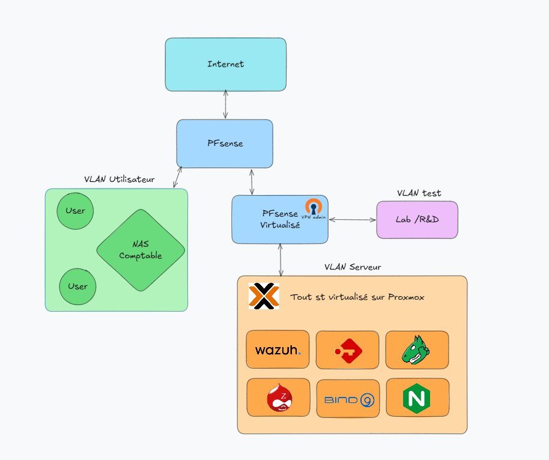

Création d'une infrastructure sécurisée

Architecture de l'infrastructure — VLAN utilisateur, serveur, test, pfSense, Proxmox et services
Contexte et présentation
Dans le cadre de ma première alternance chez Valesys, entre septembre 2023 et août 2024, j'ai travaillé sur l'infrastructure interne d'une entreprise d'environ quinze personnes. À mon arrivée, accompagné d'un autre alternant, nous avons découvert un environnement extrêmement limité : un pare-feu et un NAS, sans gestion des identités, sans segmentation réseau, sans environnement de test ni outils de supervision. L'ensemble des utilisateurs partageait un réseau unique, sans distinction des usages ni contrôle des flux.
Objectifs et redéfinition du besoin
La demande initiale consistait à déployer un SOC. Après une phase d'analyse de l'existant, nous avons identifié que cette demande reposait sur des fondations insuffisantes. Nous avons pris l'initiative, en concertation avec notre responsable, de redéfinir les priorités : construire d'abord une infrastructure sécurisée et cohérente, avant d'envisager tout mécanisme avancé de détection. L'enjeu était double : améliorer immédiatement la sécurité globale, tout en posant les bases d'un SOC réellement pertinent.
Étapes de réalisation
1 — Refonte réseau : Mise en place d'une segmentation logique via VLAN, configuration des règles de filtrage inter-VLAN, maîtrise des flux sortants. Déploiement d'un accès distant sécurisé via VPN OpenVPN/pfSense.
2 — Virtualisation : Intégration d'un serveur Dell, déploiement d'un hyperviseur Proxmox pour virtualiser l'ensemble des composants critiques. Isolation des services, facilitation des opérations de maintenance.
3 — Services essentiels : Serveur DNS interne, Proxmox Backup Server pour la résilience, Passbolt (gestionnaire de mots de passe open source) déployé à tous les utilisateurs, Zabbix pour la supervision en temps réel, reverse proxy Nginx pour centraliser les accès et gérer les certificats.
4 — SOC : Une fois l'infrastructure stabilisée, déploiement d'un SOC complet basé sur Wazuh, intégrant la stack ELK, Graylog et Grafana. Capacités avancées de détection, corrélation et visualisation des événements.
Organisation et acteurs
Ce projet a été mené exclusivement par mon collègue alternant et moi-même, avec une validation ponctuelle d'un responsable sans compétences techniques approfondies. Cette situation nous a amenés à structurer le projet de manière autonome, à prendre des décisions techniques importantes et à assumer pleinement la responsabilité des choix effectués.
Résultats
À la fin de l'alternance, l'entreprise disposait d'une infrastructure totalement transformée : réseau segmenté, systèmes sécurisés, accès contrôlés et supervisés, SOC fonctionnel. L'environnement était prêt à accueillir des projets de R&D.
Les suites du projet
Le projet a continué après mon départ : déploiement d'un Active Directory, extension du SOC à plusieurs clients, ajout de nouveaux nœuds Proxmox en datacenter. Ces évolutions confirment la pertinence des choix d'architecture réalisés en amont.
Regard critique
Ce projet constitue une étape déterminante dans mon parcours. Le manque d'encadrement technique, bien que contraignant, a été un facteur d'apprentissage fort, il m'a obligé à développer une approche rigoureuse et à structurer mes méthodes. Cette expérience a profondément modifié ma manière d'aborder les projets, en m'amenant à accorder une importance centrale à la conception et à l'intégration de la sécurité dès les premières étapes.